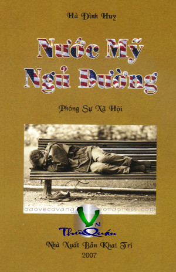

« Back
Nước Mỹ… Ngủ Đường
By Hà Đình Huy

Lời Tác Giả
Tựa
NƯỚC MỸ… NGỦ ĐƯỜNG
GIÀ ĐÂU PHẢI LÀ ĐỒ BỎ
NHỮNG MÁI TÓC ĐIỂM SƯƠNG TRÊN SÀN NHẢY
NGHỀ THU LƯỢM VE CHAI TRÊN ĐẤT MỸ
OÁI OĂM CÁI "SỰ ĐỜI
NGHỆ THUẬT CHỬI CỦA NGƯỜI VIỆT
TÌNH YÊU BI KỊCH LỚN CỦA NHỮNG KẺ ĐỒNG TÍNH LUYẾN ÁI
VUI BUỒN ĐỜI VIẾT BÁO HẢI NGOẠI
NỮ GIỚI ĐỒNG TÍNH LUYẾN ÁI
PHỞ MÓN ĂN ĐẶC SẢN CỦA DÂN TỘC
TỪ CÁI CHẾT THƯƠNG TÂM CỦA NGƯỜI MẸ TRẺ VIỆT NAM